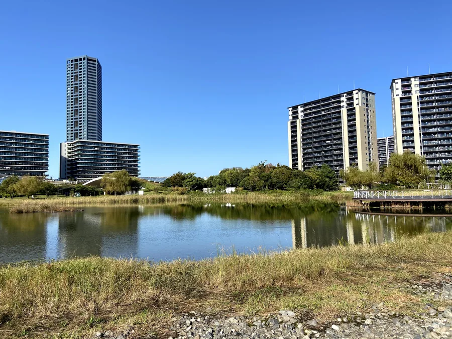

福岡はゴルフ場が市街地・空港に近いのが魅力。
福岡空港25分の久山CCから、鉄道アクセスの良いクイーンズヒル・西戸崎まで。最寄駅・空港からの所要時間つきで、アクセスしやすい順に8コースを比較しました。
福岡空港からの所要時間が短い順に掲載。各コースの最寄駅・所要時間つき。鉄道アクセスが特に良いコースには「鉄道◎」を付けています。所要時間は目安です。各コースの「詳しいアクセス」から地図・ルートを確認できます。
「免許がない」「レンタカーは不安」という方でも、福岡なら公共交通＋タクシーでアクセスできます。
予約サイトから予約できるコースのなかでは、久山カントリー倶楽部（糟屋郡久山町）が福岡空港から車で約25分と特に近いです。次いでクイーンズヒルゴルフクラブ・太宰府ゴルフ倶楽部・福岡雷山ゴルフ倶楽部などが空港から約30分圏です。出張ついでや前泊なしの早朝プレーにも向いています。
ゴルフ場の多くは最寄駅からタクシー（約10〜15分）が必要ですが、鉄道アクセスが比較的良いのはクイーンズヒルゴルフクラブ（JR筑前前原駅・福岡空港から直通約40分）と西戸崎シーサイドカントリークラブ（JR西戸崎駅・博多駅から乗り換えなし約30分）です。いずれも駅からはタクシー利用が便利です。
可能です。福岡空港でレンタカーを借りる方法が最も自由度が高くおすすめですが、最寄駅までは鉄道、駅からゴルフ場まではタクシーという組み合わせでもアクセスできます。タクシーは配車アプリ（GO・Uber等）が便利で、ゴルフ場名を画面で見せれば言葉が通じなくても伝わります。送迎バスの有無はコースにより異なるため、予約時に公式サイトでご確認ください。
福岡空港・博多・天神から30〜40分圏のコース（久山CC・クイーンズヒル・太宰府GC・西戸崎・セントラル福岡など）が便利です。空港でレンタカーを借りれば、午前プレー後に市内観光、または午後スルーで半日プレーといった柔軟な日程が組めます。本ページの各コースから最新の空き状況を確認できます。
※ 本ページのじゃらんゴルフ・楽天GORAリンクは、A8.netを経由するアフィリエイトリンクです。リンクからの予約により当サイトに報酬が発生する場合があります。所要時間・最寄駅・送迎の有無は目安であり変動する場合があります。最新情報は各予約サイト・公式サイトでご確認ください。